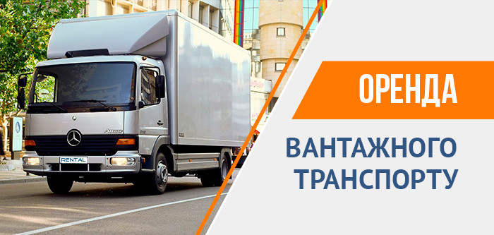

<div class="concierge">
    <div class="container">
      <div class="row">
        <div class="col xl7 offset-xl2">
          <h1>Оренда вантажного транспорту</h1>
          
          <h2>Оренда вантажного транспорту вантажопідйомністю від 2,5 до 6 тонн</h2>
          <p>В Україні все більше компаній та приватних підприємців беруть напрокат вантажні
             автомобілі. В компанії RENTAL, що пропонує такі послуги вже 7 років, автопарк нещодавно 
             поповнився сучасним транспортом підвищеної вантажопідйомності.</p>
          <p>У різних куточках країни взяти напрокат нові вантажні автомобілі можуть не лише юридичні, а й фізичні особи. 
            В 6 великих містах України здаються в оренду Mercedes Atego та DAF LF, які здатні перевозити до 6 тонн вантажів.
             Якщо ви перебуваєте в іншому місті, за додаткову плату ми доставимо вантажівку до вашого населеного пункту.</p>

          <h2>Вартість прокату транспортних засобів підвищеної вантажопідйомності</h2>

              <table cellpadding="0" cellspacing="0" style="width: 100%;">
                  <tbody>
                    <tr>
                      <td rowspan="2" style="text-align: center;">
                      <p><strong><i>Вантажний транспорт</i></strong></p>
                      </td>
                      <td rowspan="2" style="text-align: center;">
                      <p><strong><i>Максимальна вага вантажу, т</i></strong></p>
                      </td>
                      <td rowspan="2" style="text-align: center;">
                      <p><strong><i>Максимальний об’єм вантажу, м<sup>3</sup></i></strong></p>
                      </td>
                      <td colspan="4" style="text-align: center;">
                      <p><strong>Добовий тариф на оренду вантажного транспорту, $</strong></p>
                      </td>
                    </tr>
                    <tr>
                      <td style="text-align: center;">
                      <p><i>1–3 діб</i></p>
                      </td>
                      <td style="text-align: center;">
                      <p><i>4–9 діб</i></p>
                      </td>
                      <td style="text-align: center;">
                      <p><i>10–25 діб</i></p>
                      </td>
                      <td style="text-align: center;">
                      <p><i>Від 26 діб</i></p>
                      </td>
                    </tr>
                    <tr>
                      <td style="text-align: center;">
                      <p><i>MERCEDES ATEGO 815</i></p>
                      </td>
                      <td style="text-align: center;">
                      <p><i>до 6,0</i></p>
                      </td>
                      <td style="text-align: center;">
                      <p><i>35</i></p>
                      </td>
                      <td style="text-align: center;">
                      <p><i>100</i></p>
                      </td>
                      <td style="text-align: center;">
                      <p><i>95</i></p>
                      </td>
                      <td style="text-align: center;">
                      <p><i>85</i></p>
                      </td>
                      <td style="text-align: center;">
                      <p><i>75</i></p>
                      </td>
                    </tr>
                    <tr>
                      <td style="text-align: center;">
                      <p><i>DAF LF 45</i></p>
                      </td>
                      <td style="text-align: center;">
                      <p><i>до 6,0</i></p>
                      </td>
                      <td style="text-align: center;">
                      <p><i>38</i></p>
                      </td>
                      <td style="text-align: center;">
                      <p><i>100</i></p>
                      </td>
                      <td style="text-align: center;">
                      <p><i>95</i></p>
                      </td>
                      <td style="text-align: center;">
                      <p><i>85</i></p>
                      </td>
                      <td style="text-align: center;">
                      <p><i>75</i></p>
                      </td>
                    </tr>
                  </tbody>
                </table>
   
          <p>Стандартна комплектація авто:</p>
          <ul>
            <li>гідроліфт (плоска підйомна платформа),</li>
            <li>ABS,</li>
            <li>кондиціонер,</li>
            <li>круїз-контроль (для контролю швидкості транспорту, що йде попереду).</li>
          </ul>

          <p>Всі авто застраховані на випадок ДТП, викрадення чи інших непередбачених ситуацій (наприклад, заподіяння шкоди третіми особами).</p>
          <p>Крім цього, в каталозі компанії великий вибір Opel Vivaro, Volkswagen T5, Fiat Doblo Cargo і Mercedes Sprinter, які здатні за один рейс
             перевозити до 2,5 тонн різних вантажів.</p>

          <h2>Хто може взяти напрокат в компанії RENTAL вантажний транспорт?</h2>
          <p>Право сісти за кермо нашого авто надається водіям від 21 року, з них понад 3 роки вони мають керувати транспортними засобами.</p>
          <p>Список документів для оформлення договору оренди:</p>
            <ul>
              <li>Фізична особа надає паспорт громадянина України або іншої країни та водійське посвідчення.</li>
              <li>Юридична особа надає установчі папери (устав, установчий договір).</li>
            </ul>
          <p>Фізичні особи обов’язково вносять заставу – $1000. Юридичні особи можуть обмежитися гарантійним листом (за погодженням з нашим менеджером).</p>
          <p>Увага! Ви можете оплатити прокат вантажного комерційного транспорту готівкою, банківською карткою або переказом коштів з банківської картки на 
            рахунок компанії RENTAL (включно з ПДВ).</p>
          <p>У нас передбачений ліміт на пробіг комерційного транспорту – 300 км за 24 години. Розрахунок здійснюється не за добу, а за сукупністю – за кількістю днів оренди.
             Наприклад, якщо ви користуєтесь транспортом 3 дні, загальний ліміт – 900 км. Якщо його перевищено, за кожний додатковий кілометр необхідно доплатити 4 грн.</p>
          <h2>Чому вигідно брати в оренду комерційний транспорт?</h2>
          <p>Ви витрачаєте кошти компанії лише на послуги оренди, купівлю палива та оплату роботи водія. Всі витрати на утримання дорогого вантажного транспортного 
            засобу лежать на його власнику – компанії RENTAL.</p>
          <p>Якщо протягом періоду оренди автомобіль виявиться непридатним для подальшого використання, ми замінимо його на аналогічний транспортний засіб.</p>
          <p>Чим триваліший термін прокату, наприклад, 36 або 60 днів, тим нижчий добовий тариф. При цьому ліміт на пробіг збільшується порівняно з короткостроковим прокатом авто.
             Додатковий бонус: RENTAL дозволяє розміщувати на своїх автомобілях рекламу орендатора.</p>
          <p>Орендувати вантажівки ви можете для розв’язання як одноразових, так і довгострокових бізнес-задач. Це вигідніше, ніж 365 днів на рік утримувати власний автопарк 
            чи поповнювати його дорогим вантажним транспортом.</p>
          <p>Ще одна вигідна пропозиція від RENTAL: у разі тривалого терміну оренди і підписання договору на період понад року можлива купівля автомобіля з урахуванням ваших потреб 
            (вантажопідйомність, обсяг вантажного відсіку, тип кузова та кабіни, спосіб завантаження).</p>
            <p>Оформлюйте договір оренди в будь-якому філіалі компанії RENTAL в Києві, Вінниці, Дніпрі, Львові, Одесі та Харкові.</p>
        </div>
      </div>
    </div>
  </div>